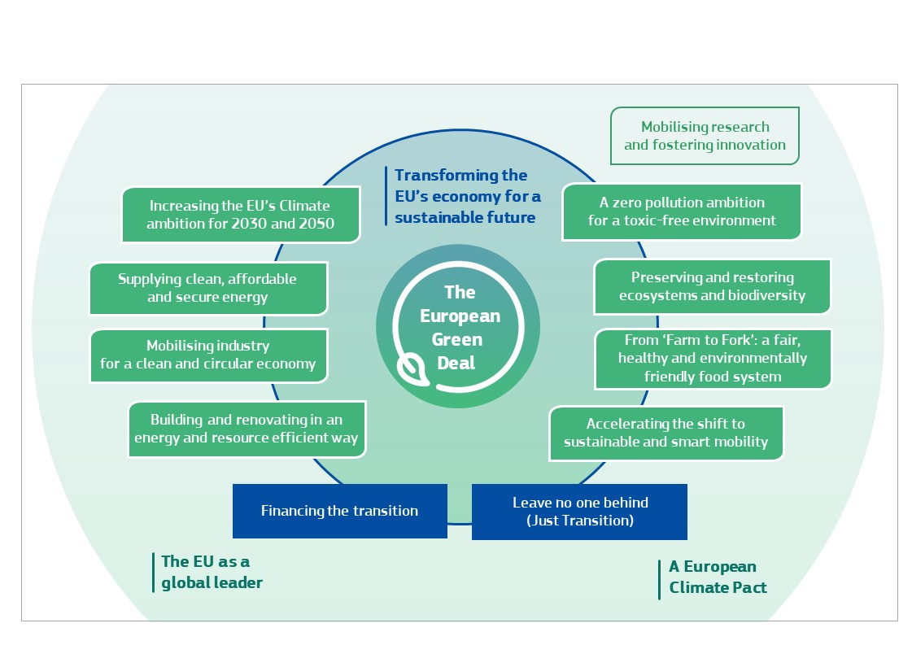

EUROPEAN COMMISSION
EUROPEAN COMMISSION
Brussels, 11.12.2019
COM(2019) 640 final
COMMUNICATION FROM THE COMMISSION
The European Green Deal
EUROPEAN COMMISSION
Brussels, 11.12.2019
COM(2019) 640 final
COMMUNICATION FROM THE COMMISSION
The European Green Deal
1.Introduction - turning an urgent challenge into a unique opportunity
This Communication sets out a European Green Deal for the European Union (EU) and its citizens. It resets the Commission’s commitment to tackling climate and environmental-related challenges that is this generation’s defining task. The atmosphere is warming and the climate is changing with each passing year. One million of the eight million species on the planet are at risk of being lost. Forests and oceans are being polluted and destroyed 1 .
The European Green Deal is a response to these challenges. It is a new growth strategy that aims to transform the EU into a fair and prosperous society, with a modern, resource-efficient and competitive economy where there are no net emissions of greenhouse gases in 2050 and where economic growth is decoupled from resource use.
It also aims to protect, conserve and enhance the EU's natural capital, and protect the health and well-being of citizens from environment-related risks and impacts. At the same time, this transition must be just and inclusive. It must put people first, and pay attention to the regions, industries and workers who will face the greatest challenges. Since it will bring substantial change, active public participation and confidence in the transition is paramount if policies are to work and be accepted. A new pact is needed to bring together citizens in all their diversity, with national, regional, local authorities, civil society and industry working closely with the EU’s institutions and consultative bodies.
The EU has the collective ability to transform its economy and society to put it on a more sustainable path. It can build on its strengths as a global leader on climate and environmental measures, consumer protection, and workers’ rights. Delivering additional reductions in emissions is a challenge. It will require massive public investment and increased efforts to direct private capital towards climate and environmental action, while avoiding lock-in into unsustainable practices. The EU must be at the forefront of coordinating international efforts towards building a coherent financial system that supports sustainable solutions. This upfront investment is also an opportunity to put Europe firmly on a new path of sustainable and inclusive growth. The European Green Deal will accelerate and underpin the transition needed in all sectors.
The environmental ambition of the Green Deal will not be achieved by Europe acting alone. The drivers of climate change and biodiversity loss are global and are not limited by national borders. The EU can use its influence, expertise and financial resources to mobilise its neighbours and partners to join it on a sustainable path. The EU will continue to lead international efforts and wants to build alliances with the like-minded. It also recognises the need to maintain its security of supply and competitiveness even when others are unwilling to act.
This Communication presents an initial roadmap of the key policies and measures needed to achieve the European Green Deal. It will be updated as needs evolve and the policy responses are formulated. All EU actions and policies will have to contribute to the European Green Deal objectives. The challenges are complex and interlinked. The policy response must be bold and comprehensive and seek to maximise benefits for health, quality of life, resilience and competitiveness. It will require intense coordination to exploit the available synergies across all policy areas 2 .
The Green Deal is an integral part of this Commission’s strategy to implement the United Nation’s 2030 Agenda and the sustainable development goals 3 , and the other priorities announced in President von der Leyen’s political guidelines 4 . As part of the Green Deal, the Commission will refocus the European Semester process of macroeconomic coordination to integrate the United Nations’ sustainable development goals, to put sustainability and the well-being of citizens at the centre of economic policy, and the sustainable development goals at the heart of the EU’s policymaking and action.
The figure below illustrates the various elements of the Green Deal.

Figure 1: The European Green Deal
2.Transforming the EU’s economy for a sustainable future
2.1.Designing a set of deeply transformative policies
To deliver the European Green Deal, there is a need to rethink policies for clean energy supply across the economy, industry, production and consumption, large-scale infrastructure, transport, food and agriculture, construction, taxation and social benefits. To achieve these aims, it is essential to increase the value given to protecting and restoring natural ecosystems, to the sustainable use of resources and to improving human health. This is where transformational change is most needed and potentially most beneficial for the EU economy, society and natural environment. The EU should also promote and invest in the necessary digital transformation and tools as these are essential enablers of the changes.
While all of these areas for action are strongly interlinked and mutually reinforcing, careful attention will have to be paid when there are potential trade-offs between economic, environmental and social objectives. The Green Deal will make consistent use of all policy levers: regulation and standardisation, investment and innovation, national reforms, dialogue with social partners and international cooperation. The European Pillar of Social Rights will guide action in ensuring that no one is left behind.
New measures on their own will not be enough to achieve the European Green Deal’s objectives. In addition to launching new initiatives, the Commission will work with the Member States to step up the EU’s efforts to ensure that current legislation and policies relevant to the Green Deal are enforced and effectively implemented.
2.1.1.Increasing the EU’s climate ambition for 2030 and 2050
The Commission has already set out a clear vision of how to achieve climate neutrality by 2050 5 . This vision should form the basis for the long-term strategy that the EU will submit to the United Nations Framework Convention on Climate Change in early 2020. To set out clearly the conditions for an effective and fair transition, to provide predictability for investors, and to ensure that the transition is irreversible, the Commission will propose the first European ‘Climate Law’ by March 2020. This will enshrine the 2050 climate neutrality objective in legislation. The Climate Law will also ensure that all EU policies contribute to the climate neutrality objective and that all sectors play their part.
The EU has already started to modernise and transform the economy with the aim of climate neutrality. Between 1990 and 2018, it reduced greenhouse gas emissions by 23%, while the economy grew by 61%. However, current policies will only reduce greenhouse gas emissions by 60% by 2050. Much remains to be done, starting with more ambitious climate action in the coming decade.
By summer 2020, the Commission will present an impact assessed plan to increase the EU’s greenhouse gas emission reductions target for 2030 to at least 50% and towards 55% compared with 1990 levels in a responsible way. To deliver these additional greenhouse gas emissions reductions, the Commission will, by June 2021, review and propose to revise where necessary, all relevant climate-related policy instruments. This will comprise the Emissions Trading System 6 , including a possible extension of European emissions trading to new sectors, Member State targets to reduce emissions in sectors outside the Emissions Trading System 7 , and the regulation on land use, land use change and forestry 8 . The Commission will propose to amend the Climate Law to update it accordingly.
These policy reforms will help to ensure effective carbon pricing throughout the economy. This will encourage changes in consumer and business behaviour, and facilitate an increase in sustainable public and private investment. The different pricing instruments must complement each other and jointly provide a coherent policy framework. Ensuring that taxation is aligned with climate objectives is also essential. The Commission will propose to revise the Energy Taxation Directive 9 , focusing on environmental issues, and proposing to use the provisions in the Treaties that allow the European Parliament and the Council to adopt proposals in this area through the ordinary legislative procedure by qualified majority voting rather than by unanimity.
As long as many international partners do not share the same ambition as the EU, there is a risk of carbon leakage, either because production is transferred from the EU to other countries with lower ambition for emission reduction, or because EU products are replaced by more carbon-intensive imports. If this risk materialises, there will be no reduction in global emissions, and this will frustrate the efforts of the EU and its industries to meet the global climate objectives of the Paris Agreement.
Should differences in levels of ambition worldwide persist, as the EU increases its climate ambition, the Commission will propose a carbon border adjustment mechanism, for selected sectors, to reduce the risk of carbon leakage. This would ensure that the price of imports reflect more accurately their carbon content. This measure will be designed to comply with World Trade Organization rules and other international obligations of the EU. It would be an alternative to the measures 10 that address the risk of carbon leakage in the EU’s Emissions Trading System.
The Commission will adopt a new, more ambitious EU strategy on adaptation to climate change. This is essential, as climate change will continue to create significant stress in Europe in spite of the mitigation efforts. Strengthening the efforts on climate-proofing, resilience building, prevention and preparedness is crucial. Work on climate adaptation should continue to influence public and private investments, including on nature-based solutions. It will be important to ensure that across the EU, investors, insurers, businesses, cities and citizens are able to access data and to develop instruments to integrate climate change into their risk management practices.
2.1.2.Supplying clean, affordable and secure energy
Further decarbonising the energy system is critical to reach climate objectives in 2030 and 2050. The production and use of energy across economic sectors account for more than 75% of the EU’s greenhouse gas emissions. Energy efficiency must be prioritised. A power sector must be developed that is based largely on renewable sources, complemented by the rapid phasing out of coal and decarbonising gas. At the same time, the EU's energy supply needs to be secure and affordable for consumers and businesses. For this to happen, it is essential to ensure that the European energy market is fully integrated, interconnected and digitalised, while respecting technological neutrality.
Member States will present their revised energy and climate plans by the end of 2019. In line with the Regulation on the Governance of the Energy Union and Climate Action 11 , these plans should set out ambitious national contributions to EU-wide targets. The Commission will assess the ambition of the plans, and the need for additional measures if the level of ambition is not sufficient. This will feed into the process of increasing climate ambition for 2030, for which the Commission will review and propose to revise, where necessary, the relevant energy legislation by June 2021. When Member States begin updating their national energy and climate plans in 2023, they should reflect the new climate ambition. The Commission will continue to ensure that all relevant legislation is rigorously enforced.
The clean energy transition should involve and benefit consumers. Renewable energy sources will have an essential role. Increasing offshore wind production will be essential, building on regional cooperation between Member States. The smart integration of renewables, energy efficiency and other sustainable solutions across sectors will help to achieve decarbonisation at the lowest possible cost. The rapid decrease in the cost of renewables, combined with improved design of support policies, has already reduced the impact on households’ energy bills of renewables deployment. The Commission will present by mid-2020 measures to help achieve smart integration. In parallel, the decarbonisation of the gas sector will be facilitated, including via enhancing support for the development of decarbonised gases, via a forward-looking design for a competitive decarbonised gas market, and by addressing the issue of energy-related methane emissions.
The risk of energy poverty must be addressed for households that cannot afford key energy services to ensure a basic standard of living. Effective programmes, such as financing schemes for households to renovate their houses, can reduce energy bills and help the environment. In 2020, the Commission will produce guidance to assist Member States in addressing the issue of energy poverty.
The transition to climate neutrality also requires smart infrastructure. Increased cross-border and regional cooperation will help achieve the benefits of the clean energy transition at affordable prices. The regulatory framework for energy infrastructure, including the TEN-E Regulation 12 , will need to be reviewed to ensure consistency with the climate neutrality objective. This framework should foster the deployment of innovative technologies and infrastructure, such as smart grids, hydrogen networks or carbon capture, storage and utilisation, energy storage, also enabling sector integration. Some existing infrastructure and assets will require upgrading to remain fit for purpose and climate resilient.
2.1.3.Mobilising industry for a clean and circular economy
Achieving a climate neutral and circular economy requires the full mobilisation of industry. It takes 25 years – a generation – to transform an industrial sector and all the value chains. To be ready in 2050, decisions and actions need to be taken in the next five years.
From 1970 to 2017, the annual global extraction of materials tripled and it continues to grow 13 , posing a major global risk. About half of total greenhouse gas emissions and more than 90% of biodiversity loss and water stress come from resource extraction and processing of materials, fuels and food. The EU’s industry has started the shift but still accounts for 20% of the EU’s greenhouse gas emissions. It remains too ‘linear’, and dependent on a throughput of new materials extracted, traded and processed into goods, and finally disposed of as waste or emissions. Only 12% of the materials it uses come from recycling 14 .
The transition is an opportunity to expand sustainable and job-intensive economic activity. There is significant potential in global markets for low-emission technologies, sustainable products and services. Likewise, the circular economy offers great potential for new activities and jobs. However, the transformation is taking place at a too slow pace with progress neither widespread nor uniform. The European Green Deal will support and accelerate the EU’s industry transition to a sustainable model of inclusive growth.
In March 2020, the Commission will adopt an EU industrial strategy to address the twin challenge of the green and the digital transformation. Europe must leverage the potential of the digital transformation, which is a key enabler for reaching the Green Deal objectives. Together with the industrial strategy, a new circular economy action plan will help modernise the EU’s economy and draw benefit from the opportunities of the circular economy domestically and globally. A key aim of the new policy framework will be to stimulate the development of lead markets for climate neutral and circular products, in the EU and beyond.
Energy-intensive industries, such as steel, chemicals and cement, are indispensable to Europe’s economy, as they supply several key value chains. The decarbonisation and modernisation of this sector is essential. The recommendations published by the High Level Group of energy-intensive industries show the industry’s commitment to these objectives 15 .
The circular economy action plan will include a ‘sustainable products’ policy to support the circular design of all products based on a common methodology and principles. It will prioritise reducing and reusing materials before recycling them. It will foster new business models and set minimum requirements to prevent environmentally harmful products from being placed on the EU market. Extended producer responsibility will also be strengthened.
While the circular economy action plan will guide the transition of all sectors, action will focus in particular on resource-intensive sectors such as textiles, construction, electronics and plastics. The Commission will follow up on the 2018 plastics strategy focusing, among other things, on measures to tackle intentionally added micro plastics and unintentional releases of plastics, for example from textiles and tyre abrasion. The Commission will develop requirements to ensure that all packaging in the EU market is reusable or recyclable in an economically viable manner by 2030, will develop a regulatory framework for biodegradable and bio-based plastics, and will implement measures on single use plastics.
The circular economy action plan will also include measures to encourage businesses to offer, and to allow consumers to choose, reusable, durable and repairable products. It will analyse the need for a ‘right to repair’, and curb the built-in obsolescence of devices, in particular for electronics. Consumer policy will help to empower consumers to make informed choices and play an active role in the ecological transition. New business models based on renting and sharing goods and services will play a role as long as they are truly sustainable and affordable.
Reliable, comparable and verifiable information also plays an important part in enabling buyers to make more sustainable decisions and reduces the risk of ‘green washing’. Companies making ‘green claims’ should substantiate these against a standard methodology to assess their impact on the environment. The Commission will step up its regulatory and non-regulatory efforts to tackle false green claims. Digitalisation can also help improve the availability of information on the characteristics of products sold in the EU. For instance, an electronic product passport could provide information on a product’s origin, composition, repair and dismantling possibilities, and end of life handling. Public authorities, including the EU institutions, should lead by example and ensure that their procurement is green. The Commission will propose further legislation and guidance on green public purchasing.
A sustainable product policy also has the potential to reduce waste significantly. Where waste cannot be avoided, its economic value must be recovered and its impact on the environment and on climate change avoided or minimised. This requires new legislation, including targets and measures for tackling over-packaging and waste generation. In parallel, EU companies should benefit from a robust and integrated single market for secondary raw materials and by-products. This requires deeper cooperation across value chains, as in the case of the Circular Plastics Alliance. The Commission will consider legal requirements to boost the market of secondary raw materials with mandatory recycled content (for instance for packaging, vehicles, construction materials and batteries). To simplify waste management for citizens and ensure cleaner secondary materials for businesses, the Commission will also propose an EU model for separate waste collection. The Commission is of the view that the EU should stop exporting its waste outside of the EU and will therefore revisit the rules on waste shipments and illegal exports.
Access to resources is also a strategic security question for Europe’s ambition to deliver the Green Deal. Ensuring the supply of sustainable raw materials, in particular of critical raw materials necessary for clean technologies, digital, space and defence applications, by diversifying supply from both primary and secondary sources, is therefore one of the pre-requisites to make this transition happen.
EU industry needs ‘climate and resource frontrunners’ to develop the first commercial applications of breakthrough technologies in key industrial sectors by 2030. Priority areas include clean hydrogen, fuel cells and other alternative fuels, energy storage, and carbon capture, storage and utilisation. As an example, the Commission will support clean steel breakthrough technologies leading to a zero-carbon steel making process by 2030 and will explore whether part of the funding being liquidated under the European Coal and Steel Community can be used. More broadly, the EU Emissions Trading System Innovation Fund will help to deploy such large-scale innovative projects.
Promoting new forms of collaboration with industry and investments in strategic value chains are essential. The Commission will continue to implement the Strategic Action Plan on Batteries and support the European Battery Alliance. It will propose legislation in 2020 to ensure a safe, circular and sustainable battery value chain for all batteries, including to supply the growing market of electric vehicles. The Commission will also support other initiatives leading to alliances and to a large-scale pooling of resources, for example in the form of Important Projects of Common European Interest, where targeted time-bound State aid can help build new innovative value chains.
Digital technologies are a critical enabler for attaining the sustainability goals of the Green deal in many different sectors. The Commission will explore measures to ensure that digital technologies such as artificial intelligence, 5G, cloud and edge computing and the internet of things can accelerate and maximise the impact of policies to deal with climate change and protect the environment. Digitalisation also presents new opportunities for distance monitoring of air and water pollution, or for monitoring and optimising how energy and natural resources are used. At the same time, Europe needs a digital sector that puts sustainability at its heart. The Commission will also consider measures to improve the energy efficiency and circular economy performance of the sector itself, from broadband networks to data centres and ICT devices. The Commission will assess the need for more transparency on the environmental impact of electronic communication services, more stringent measures when deploying new networks and the benefits of supporting ‘take-back’ schemes to incentivise people to return their unwanted devices such as mobile phones, tablets and chargers.
2.1.4.Building and renovating in an energy and resource efficient way
The construction, use and renovation of buildings require significant amounts of energy and mineral resources (e.g. sand, gravel, cement). Buildings also account for 40% of energy consumed. Today the annual renovation rate of the building stock varies from 0.4 to 1.2% in the Member States. This rate will need at least to double to reach the EU’s energy efficiency and climate objectives. In parallel, 50 million consumers struggle to keep their homes adequately warm.
To address the twin challenge of energy efficiency and affordability, the EU and the Member States should engage in a ‘renovation wave’ of public and private buildings. While increasing renovation rates is a challenge, renovation lowers energy bills, and can reduce energy poverty. It can also boost the construction sector and is an opportunity to support SMEs and local jobs.
The Commission will rigorously enforce the legislation related to the energy performance of buildings. This will start with an assessment in 2020 of Member States’ national long-term renovation strategies 16 . The Commission will also launch work on the possibility of including emissions from buildings in European emissions trading, as part of broader efforts to ensure that the relative prices of different energy sources provide the right signals for energy efficiency. In addition, the Commission will review the Construction Products Regulation 17 . It should ensure that the design of new and renovated buildings at all stages is in line with the needs of the circular economy, and lead to increased digitalisation and climate-proofing of the building stock.
In parallel, the Commission proposes to work with stakeholders on a new initiative on renovation in 2020. This will include an open platform bringing together the buildings and construction sector, architects and engineers and local authorities to address the barriers to renovation. This initiative will also include innovative financing schemes under InvestEU. These could target housing associations or energy service companies that could roll out renovation including through energy performance contracting. An essential aim would be to organise renovation efforts into larger blocks to benefit from better financing conditions and economies of scale. The Commission will also work to lift national regulatory barriers that inhibit energy efficiency investments in rented and multi-ownership buildings. Particular attention will be paid to the renovation of social housing, to help households who struggle to pay their energy bills. Focus should also be put on renovating schools and hospitals, as the money saved through building efficiency will be money available to support education and public health.
2.1.5.Accelerating the shift to sustainable and smart mobility
Transport accounts for a quarter of the EU’s greenhouse gas emissions, and still growing. To achieve climate neutrality, a 90% reduction in transport emissions is needed by 2050. Road, rail, aviation, and waterborne transport will all have to contribute to the reduction. Achieving sustainable transport means putting users first and providing them with more affordable, accessible, healthier and cleaner alternatives to their current mobility habits. The Commission will adopt a strategy for sustainable and smart mobility in 2020 that will address this challenge and tackle all emission sources.
Multimodal transport needs a strong boost. This will increase the efficiency of the transport system. As a matter of priority, a substantial part of the 75% of inland freight carried today by road should shift onto rail and inland waterways. This will require measures to manage better, and to increase the capacity of railways and inland waterways, which the Commission will propose by 2021. The Commission will also consider withdrawing and presenting a new proposal to revise the Combined Transport Directive 18 to turn it into an effective tool to support multimodal freight operations involving rail and waterborne transport, including short-sea shipping. In aviation, work on adopting the Commission’s proposal on a truly Single European Sky will need to restart, as this will help achieve significant reductions in aviation emissions.
Automated and connected multimodal mobility will play an increasing role, together with smart traffic management systems enabled by digitalisation. The EU transport system and infrastructure will be made fit to support new sustainable mobility services that can reduce congestion and pollution, especially in urban areas. The Commission will help develop smart systems for traffic management and ‘Mobility as a Service’ solutions, through its funding instruments, such as the Connected Europe Facility.
The price of transport must reflect the impact it has on the environment and on health. Fossil-fuel subsidies should end and, in the context of the revision of the Energy Taxation Directive, the Commission will look closely at the current tax exemptions including for aviation and maritime fuels and at how best to close any loopholes. Similarly, the Commission will propose to extend European emissions trading to the maritime sector, and to reduce the EU Emissions Trading System allowances allocated for free to airlines. This will be coordinated with action at global level, notably at the International Civil Aviation Organization and International Maritime Organization. The Commission will also give fresh political consideration as to how to achieve effective road pricing in the EU. It calls on the European Parliament and the Council to maintain the high level of ambition in the Commission’s original proposal for the ‘Eurovignette’ Directive 19 , and is ready to withdraw it if necessary and to propose alternative measures.
The EU should in parallel ramp-up the production and deployment of sustainable alternative transport fuels. By 2025, about 1 million public recharging and refuelling stations will be needed for the 13 million zero- and low-emission vehicles expected on European roads. The Commission will support the deployment of public recharging and refuelling points where persistent gaps exist, notably for long-distance travel and in less densely populated areas, and will launch as quickly as possible a new funding call to support this. These steps will complement the measures taken at national level. The Commission will consider legislative options to boost the production and uptake of sustainable alternative fuels for the different transport modes. The Commission will also review the Alternative Fuels Infrastructure Directive 20 and the TENT Regulation to accelerate the deployment of zero- and low-emission vehicles and vessels.
Transport should become drastically less polluting, especially in cities. A combination of measures should address emissions, urban congestion, and improved public transport. The Commission will propose more stringent air pollutant emissions standards for combustion-engine vehicles. The Commission will also propose to revise by June 2021 the legislation on CO2 emission performance standards for cars and vans, to ensure a clear pathway from 2025 onwards towards zero-emission mobility. In parallel, it will consider applying European emissions trading to road transport, as a complement to existing and future CO2 emission performance standards for vehicles. It will take action in relation to maritime transport, including to regulate access of the most polluting ships to EU ports and to oblige docked ships to use shore-side electricity. Similarly, air quality should be improved near airports by tackling the emissions of pollutants by aeroplanes and airport operations.
2.1.6. From ‘Farm to Fork’: designing a fair, healthy and environmentally-friendly food system
European food is famous for being safe, nutritious and of high quality. It should now also become the global standard for sustainability. Although the transition to more sustainable systems has started, feeding a fast-growing world population remains a challenge with current production patterns. Food production still results in air, water and soil pollution, contributes to the loss of biodiversity and climate change, and consumes excessive amounts of natural resources, while an important part of food is wasted. At the same time, low quality diets contribute to obesity and diseases such as cancer.
There are new opportunities for all operators in the food value chain. New technologies and scientific discoveries, combined with increasing public awareness and demand for sustainable food, will benefit all stakeholders. The Commission will present the ‘Farm to Fork’ Strategy in spring 2020 and launch a broad stakeholder debate covering all the stages of the food chain, and paving the way to formulating a more sustainable food policy.
European farmers and fishermen are key to managing the transition. The Farm to Fork Strategy will strengthen their efforts to tackle climate change, protect the environment and preserve biodiversity. The common agricultural and common fisheries policies will remain key tools to support these efforts while ensuring a decent living for farmers, fishermen and their families. The Commission’s proposals for the common agricultural policy for 2021 to 2027 stipulate that at least 40% of the common agricultural policy’s overall budget and at least 30% of the Maritime Fisheries Fund would contribute to climate action.
The Commission will work with the European Parliament and the Council to achieve at least this level of ambition in the proposals. Given that the start of the revised Common Agricultural Policy is likely to be delayed to the beginning of 2022, the Commission will work with the Member States and stakeholders to ensure that from the outset the national strategic plans for agriculture fully reflect the ambition of the Green Deal and the Farm to Fork Strategy. The Commission will ensure that these strategic plans are assessed against robust climate and environmental criteria. These plans should lead to the use of sustainable practices, such as precision agriculture, organic farming, agro-ecology, agro-forestry and stricter animal welfare standards. By shifting the focus from compliance to performance, measures such as eco-schemes should reward farmers for improved environmental and climate performance, including managing and storing carbon in the soil, and improved nutrient management to improve water quality and reduce emissions. The Commission will work with the Member States to develop the potential of sustainable seafood as a source of low-carbon food.
The strategic plans will need to reflect an increased level of ambition to reduce significantly the use and risk of chemical pesticides, as well as the use of fertilisers and antibiotics. The Commission will identify the measures, including legislative, needed to bring about these reductions based on a stakeholder dialogue. The area under organic farming will also need to increase in Europe. The EU needs to develop innovative ways to protect harvests from pests and diseases and to consider the potential role of new innovative techniques to improve the sustainability of the food system, while ensuring that they are safe.
The Farm to Fork Strategy will also contribute to achieving a circular economy. It will aim to reduce the environmental impact of the food processing and retail sectors by taking action on transport, storage, packaging and food waste. This will include actions to combat food fraud, including strengthening enforcement and investigative capacity at EU level, and to launch a process to identify new innovative food and feed products, such as seafood based on algae.
Lastly, the Farm to Fork Strategy will strive to stimulate sustainable food consumption and promote affordable healthy food for all. Imported food that does not comply with relevant EU environmental standards is not allowed on EU markets. The Commission will propose actions to help consumers choose healthy and sustainable diets and reduce food waste. The Commission will explore new ways to give consumers better information, including by digital means, on details such as where the food comes from, its nutritional value, and its environmental footprint. The Farm to Fork strategy will also contain proposals to improve the position of farmers in the value chain.
2.1.7.Preserving and restoring ecosystems and biodiversity
Ecosystems provide essential services such as food, fresh water and clean air, and shelter. They mitigate natural disasters, pests and diseases and help regulate the climate. However, the EU is not meeting some of its most important environmental objectives for 2020, such as the Aichi targets under the Convention on Biological Diversity. The EU and its global partners need to halt biodiversity loss. The Intergovernmental Science-Policy Platform on Biodiversity and Ecosystem Services’ 2019 Global Assessment Report 21 showed worldwide erosion of biodiversity, caused primarily by changes in how land and sea are used, direct exploitation of natural resources, and with climate change as the third most important driver of biodiversity loss.
The Conference of the Parties to the Convention on Biological Diversity in Kunming, China, in October 2020 is an opportunity for the world to adopt a robust global framework to halt biodiversity loss. To ensure that the EU plays a key role, the Commission will present a Biodiversity Strategy by March 2020, to be followed up by specific action in 2021. The strategy will outline the EU’s position for the Conference of the Parties, with global targets to protect biodiversity, as well as commitments to address the main causes of biodiversity loss in the EU, underpinned by measurable objectives that address the main causes of biodiversity loss.
The biodiversity strategy will identify specific measures to meet these objectives. These could include quantified objectives, such as increasing the coverage of protected biodiversity-rich land and sea areas building on the Natura 2000 network. Member States should also reinforce cross-border cooperation to protect and restore more effectively the areas covered by the Natura 2000 network. The Commission will identify which measures, including legislation, would help Member States improve and restore damaged ecosystems to good ecological status, including carbon-rich ecosystems. The biodiversity strategy will also include proposals to green European cities and increase biodiversity in urban spaces. The Commission will consider drafting a nature restoration plan and will look at how provide funding to help Member States to reach this aim.
All EU policies should contribute to preserving and restoring Europe’s natural capital 22 . The Farm to Fork Strategy, outlined in section 2.1.6, will address the use of pesticides and fertilisers in agriculture. Work will continue under the common fisheries policy to reduce the adverse impacts that fishing can have on ecosystems, especially in sensitive areas. The Commission will also support more connected and well-managed marine protected areas.
Forest ecosystems are under increasing pressure, as a result of climate change. The EU’s forested area needs to improve, both in quality and quantity, for the EU to reach climate neutrality and a healthy environment. Sustainable re- and afforestation and the restoration of degraded forests can increase absorption of CO2 while improving the resilience of forests and promoting the circular bio-economy. Building on the 2030 biodiversity strategy, the Commission will prepare a new EU forest strategy covering the whole forest cycle and promoting the many services that forests provide.
The new EU forest strategy will have as its key objectives effective afforestation, and forest preservation and restoration in Europe, to help to increase the absorption of CO2,, reduce the incidence and extent of forest fires, and promote the bio-economy, in full respect for ecological principles favourable to biodiversity. The national strategic plans under the common agricultural policy should incentivise forest managers to preserve, grow and manage forests sustainably. Building on the Communication on Stepping up EU Action to Protect and Restore the World’s Forests 23 , the Commission will take measures, both regulatory and otherwise, to promote imported products and value chains that do not involve deforestation and forest degradation.
A sustainable ‘blue economy’ will have to play a central role in alleviating the multiple demands on the EU's land resources and tackling climate change. The role of oceans in mitigating and adapting to climate change is increasingly recognised. The sector can contribute by improving the use of aquatic and marine resources and, for example, by promoting the production and use of new sources of protein that can relieve pressure on agricultural land. More generally, lasting solutions to climate change require greater attention to nature-based solutions including healthy and resilient seas and oceans. The Commission will analyse the findings of the International Panel on Climate Change special report on oceans 24 and propose measures in the maritime area. This will include ways to manage maritime space more sustainably, notably to help tap into the growing potential of offshore renewable energy. The Commission will also take a zero-tolerance approach to illegal, unreported and unregulated fishing. The 2020 United Nations Ocean Conference in Portugal will be an opportunity for the EU to highlight the importance of action on ocean issues.
2.1.8.A zero pollution ambition for a toxic-free environment
Creating a toxic-free environment requires more action to prevent pollution from being generated as well as measures to clean and remedy it. To protect Europe’s citizens and ecosystems, the EU needs to better monitor, report, prevent and remedy pollution from air, water, soil, and consumer products. To achieve this, the EU and Member States will need to look more systematically at all policies and regulations. To address these interlinked challenges, the Commission will adopt in 2021 a zero pollution action plan for air, water and soil.
The natural functions of ground and surface water must be restored. This is essential to preserve and restore biodiversity in lakes, rivers, wetlands and estuaries, and to prevent and limit damage from floods. Implementing the ‘Farm to Fork’ strategy will reduce pollution from excess nutrients. In addition, the Commission will propose measures to address pollution from urban runoff and from new or particularly harmful sources of pollution such as micro plastics and chemicals, including pharmaceuticals. There is also a need to address the combined effects of different pollutants.
The Commission will draw on the lessons learnt from the evaluation of the current air quality legislation 25 . It will also propose to strengthen provisions on monitoring 26 , modelling and air quality plans to help local authorities achieve cleaner air. The Commission will notably propose to revise air quality standards to align them more closely with the World Health Organization recommendations.
The Commission will review EU measures to address pollution from large industrial installations. It will look at the sectoral scope of the legislation and at how to make it fully consistent with climate, energy and circular economy policies. The Commission will also work with Member States to improve the prevention of industrial accidents.
To ensure a toxic-free environment, the Commission will present a chemicals strategy for sustainability. This will both help to protect citizens and the environment better against hazardous chemicals and encourage innovation for the development of safe and sustainable alternatives. All parties including industry should work together to combine better health and environmental protection and increased global competitiveness. This can be achieved by simplifying and strengthening the legal framework. The Commission will review how to use better the EU’s agencies and scientific bodies to move towards a process of ‘one substance – one assessment’ and to provide greater transparency when prioritising action to deal with chemicals. In parallel, the regulatory framework will need to rapidly reflect scientific evidence on the risk posed by endocrine disruptors, hazardous chemicals in products including imports, combination effects of different chemicals and very persistent chemicals.
2.2.Mainstreaming sustainability in all EU policies
2.2.1.Pursuing green finance and investment and ensuring a just transition
To achieve the ambition set by the European Green Deal, there are significant investment needs. The Commission has estimated that achieving the current 2030 climate and energy targets will require €260 billion of additional annual investment 27 , about 1.5% of 2018 GDP 28 . This flow of investment will need to be sustained over time. The magnitude of the investment challenge requires mobilising both the public and private sector.
The Commission will present a Sustainable Europe Investment Plan to help meet the additional funding needs. It will combine dedicated financing to support sustainable investments, and proposals for an improved enabling framework that is conducive to green investment. At the same time, it will be essential to prepare a pipeline of sustainable projects. Technical assistance and advisory services will help project promoters to identify and prepare projects and to access sources of finance.
The EU budget will play a key role. The Commission has proposed a 25% target for climate mainstreaming across all EU programmes. The EU budget will also contribute to achieving climate objectives on the revenue side. The Commission has proposed new revenue streams (“Own Resources”), one of which is based on the non-recycled plastic-packaging waste. A second revenue stream could involve allocating 20% of the revenue from the auctioning of EU Emissions Trading System to the EU budget.
At least 30% of the InvestEU Fund will contribute to fighting climate change. Moreover, projects will be subject to sustainability proofing to screen the contribution that they make to climate, environmental and social objectives. InvestEU also offers Member States the option to use the EU budgetary guarantee e.g. to deliver on climate-related cohesion policy objectives in their territories and regions. InvestEU also strengthens cooperation with national promotional banks and institutions, which can encourage an overall greening of their activities to deliver on EU policy objectives. Moreover, as part of the revision of the EU Emission Trading System, the Commission will review the role of the Innovation and Modernisation Funds, which are not financed by the EU’s long-term budget. The ambition will be to strengthen their role and their effectiveness in deploying innovative and climate neutral solutions across the EU. In the revision of the EU Emissions Trading System, the allocation of additional revenues from allowances to the EU budget with a view to strengthening the financing of the just transition will also be considered.
The Commission will also work with the European Investment Bank (EIB) Group, national promotional banks and institutions, as well as with other international financial institutions. The EIB set itself the target of doubling its climate target from 25% to 50% by 2025, thus becoming Europe’s climate bank.
As part of the Sustainable Europe Investment Plan, the Commission will propose a Just Transition Mechanism, including a Just Transition Fund, to leave no one behind. The transition can only succeed if it is conducted in a fair and inclusive way. The most vulnerable are the most exposed to the harmful effects of climate change and environmental degradation. At the same time, managing the transition will lead to significant structural changes in business models, skill requirements and relative prices. Citizens, depending on their social and geographic circumstances, will be affected in different ways. Not all Member States, regions and cities start the transition from the same point or have the same capacity to respond. These challenges require a strong policy response at all levels.
The Just Transition Mechanism will focus on the regions and sectors that are most affected by the transition because they depend on fossil fuels or carbon-intensive processes. It will draw on sources of funding from the EU budget as well as the EIB group to leverage the necessary private and public resources. Support will be linked to promoting a transition towards low-carbon and climate-resilient activities. It will also strive to protect the citizens and workers most vulnerable to the transition, providing access to re-skilling programmes, jobs in new economic sectors, or energy-efficient housing. The Commission will work with the Member States and regions to help them put in place territorial transition plans.
The mechanism will come in addition to the substantial contribution of the EU’s budget through all programmes directly relevant to the transition, as well as other funds such as the European Regional Development Fund and the European Social Fund Plus.
In order to bring an answer to the long-term financing needs of the transition, the Commission will continue to explore with relevant partners, as part of the Sustainable Europe Investment Plan, additional sources that could be mobilised and innovative ways to do so.
The need for a socially just transition must also be reflected in policies at EU and national level. This includes investment to provide affordable solutions to those affected by carbon pricing policies, for example through public transport, as well as measures to address energy poverty and promote re-skilling. Coherence of climate and environment policies and a holistic approach are often a precondition for ensuring they are perceived as fair, as illustrated by the debate on taxation of various modes of transport. For companies and their workers, an active social dialogue helps to anticipate and successfully manage change. The European Semester process of macroeconomic coordination will support national policies on these issues.
The private sector will be key to financing the green transition. Long-term signals are needed to direct financial and capital flows to green investment and to avoid stranded assets. The Commission will present a renewed sustainable finance strategy in the third quarter of 2020 that will focus on a number of actions.
First, the strategy will strengthen the foundations for sustainable investment. This will require notably that the European Parliament and Council adopt the taxonomy for classifying environmentally sustainable activities. Sustainability should be further embedded into the corporate governance framework, as many companies still focus too much on short-term financial performance compared to their long-term development and sustainability aspects. At the same time, companies and financial institutions will need to increase their disclosure on climate and environmental data so that investors are fully informed about the sustainability of their investments. To this end, the Commission will review the Non-Financial Reporting Directive. To ensure appropriate management of environmental risks and mitigation opportunities, and reduce related transaction costs, the Commission will also support businesses and other stakeholders in developing standardised natural capital accounting practices within the EU and internationally.
Second, increased opportunities will be provided for investors and companies by making it easier for them to identify sustainable investments and ensuring that they are credible. This could be done via clear labels for retail investment products and by developing an EU green bond standard that facilitates sustainable investment in the most convenient way.
Third, climate and environmental risks will be managed and integrated into the financial system. This means better integrating such risks into the EU prudential framework and assessing the suitability of the existing capital requirements for green assets. We will also examine how our financial system can help to increase resilience to climate and environmental risks, in particular when it comes to the physical risks and damage arising from natural catastrophes.
2.2.2.Greening national budgets and sending the right price signals
National budgets play a key role in the transition. A greater use of green budgeting tools will help to redirect public investment, consumption and taxation to green priorities and away from harmful subsidies. The Commission will work with the Member States to screen and benchmark green budgeting practices. This will make it easier to assess to what extent annual budgets and medium-term fiscal plans take environmental considerations and risks into account, and learn from best practices. The review of the European economic governance framework will include a reference to green public investment in the context of the quality of public finance. This will inform a debate on how to improve EU fiscal governance. The outcome of the debate will form the basis for any possible future steps including how to treat green investments within EU fiscal rules, while preserving safeguards against risks to debt sustainability.
Well-designed tax reforms can boost economic growth and resilience to climate shocks and help contribute to a fairer society and to a just transition. They play a direct role by sending the right price signals and providing the right incentives for sustainable behaviour by producers, users and consumers. At national level, the European Green Deal will create the context for broad-based tax reforms, removing subsidies for fossil fuels, shifting the tax burden from labour to pollution, and taking into account social considerations. There is a need to ensure rapid adoption of the Commission’s proposal on value added tax (VAT) rates currently on the table of the Council, so that Member States can make a more targeted use of VAT rates to reflect increased environmental ambitions, for example to support organic fruit and vegetables.
Evaluations are underway of the relevant State aid guidelines including the environmental and energy State aid guidelines. The guidelines will be revised by 2021 to reflect the policy objectives of the European Green Deal, supporting a cost-effective transition to climate neutrality by 2050, and will facilitate the phasing out of fossil fuels, in particular those that are most polluting, ensuring a level-playing field in the internal market. These revisions are also an opportunity to address market barriers to the deployment of clean products.
2.2.3.Mobilising research and fostering innovation
New technologies, sustainable solutions and disruptive innovation are critical to achieve the objectives of the European Green Deal. To keep its competitive advantage in clean technologies, the EU needs to increase significantly the large-scale deployment and demonstration of new technologies across sectors and across the single market, building new innovative value chains. This challenge is beyond the means of individual Member States. Horizon Europe, in synergy with other EU programmes, will play a pivotal role in leveraging national public and private investments. At least 35% of the budget of Horizon Europe will fund new solutions for climate, which are relevant for implementing the Green Deal.
The full range of instruments available under the Horizon Europe programme will support the research and innovation efforts needed. Four ‘Green Deal Missions’ will help deliver large-scale changes in areas such as adaptation to climate change, oceans, cities and soil. These missions will bring together a wide range of stakeholders including regions and citizens. Partnerships with industry and Member States will support research and innovation on transport, including batteries, clean hydrogen, low-carbon steel making, circular bio-based sectors and the built environment. The knowledge and innovation communities run by the European Institute of Innovation and Technology will continue to promote collaboration among higher education institutions, research organisations and companies on climate change, sustainable energy, food for the future, and smart, environmentally-friendly and integrated urban transport. The European Innovation Council will dedicate funding, equity investment and business acceleration services to high potential start-ups and SMEs for them to achieve breakthrough Green Deal innovation that can be scaled up rapidly on global markets.
Conventional approaches will not be sufficient. Emphasising experimentation, and working across sectors and disciplines, the EU’s research and innovation agenda will take the systemic approach needed to achieve the aims of the Green Deal. The Horizon Europe programme will also involve local communities in working towards a more sustainable future, in initiatives that seek to combine societal pull and technology push.
Accessible and interoperable data are at the heart of data-driven innovation. This data, combined with digital infrastructure (e.g. supercomputers, cloud, ultra-fast networks) and artificial intelligence solutions, facilitate evidence-based decisions and expand the capacity to understand and tackle environmental challenges. The Commission will support work to unlock the full benefits of the digital transformation to support the ecological transition. An immediate priority will be to boost the EU’s ability to predict and manage environmental disasters. To do this, the Commission will bring together European scientific and industrial excellence to develop a very high precision digital model of the Earth.
2.2.4.Activating education and training
Schools, training institutions and universities are well placed to engage with pupils, parents, and the wider community on the changes needed for a successful transition. The Commission will prepare a European competence framework to help develop and assess knowledge, skills and attitudes on climate change and sustainable development. It will also provide support materials and facilitate the exchange of good practices in EU networks of teacher-training programmes.
The Commission has been working to provide Member States with new financial resources to make school buildings and operations more sustainable. It has strengthened collaboration with the European Investment Bank and created stronger links between structural funds and the new financial instruments with the aim of leveraging €3 billion in investment in school infrastructure in 2020.
Pro-active re-skilling and upskilling are necessary to reap the benefits of the ecological transition. The proposed European Social Fund+ will play an important role in helping Europe’s workforce to acquire the skills they need to transfer from declining sectors to growing sectors and to adapt to new processes. The Skills Agenda and the Youth Guarantee will be updated to enhance employability in the green economy.
2.2.5.A green oath: ‘do no harm’
All EU actions and policies should pull together to help the EU achieve a successful and just transition towards a sustainable future. The Commission’s better regulation tools provide a solid basis for this. Based on public consultations, on the identification of the environmental, social and economic impacts, and on analyses of how SMEs are affected and innovation fostered or hindered, impact assessments contribute to making efficient policy choices at minimum costs, in line with the objectives of the Green Deal. Evaluations also systematically assess coherence between current legislation and new priorities.
To support its work to identify and remedy inconsistencies in current legislation, the Commission invites stakeholders to use the available platforms 29 to simplify legislation and identify problematic cases. The Commission will consider these suggestions when preparing evaluations, impact assessments and legislative proposals for the European Green Deal.
In addition, building on the results of its recent stock taking of better regulation policy, the Commission will improve the way its better regulation guidelines and supporting tools address sustainability and innovation issues. The objective is to ensure that all Green Deal initiatives achieve their objectives in the most effective and least burdensome way and all other EU initiatives live up to a green oath to ‘do no harm’. To this end, the explanatory memorandum accompanying all legislative proposals and delegated acts will include a specific section explaining how each initiative upholds this principle.
3.The EU as a global leader
The global challenges of climate change and environmental degradation require a global response. The EU will continue to promote and implement ambitious environment, climate and energy policies across the world. It will develop a stronger ‘green deal diplomacy’ focused on convincing and supporting others to take on their share of promoting more sustainable development. By setting a credible example, and following-up with diplomacy, trade policy, development support and other external policies, the EU can be an effective advocate. The Commission and the High Representative will work closely with Member States to mobilise all diplomatic channels both bilateral and multilateral – including the United Nations, the G7, G20, the World Trade Organization and other relevant international fora.
The EU will continue to ensure that the Paris Agreement remains the indispensable multilateral framework for tackling climate change. As the EU's share of global emissions is falling, comparable action and increased efforts by other regions will be critical for addressing the global climate challenge in a meaningful way. The debate on climate ambition will intensify in the coming months in line with the Paris Agreement provisions for regular stocktaking and updates. The Conference of Parties in Glasgow in 2020 will be an important milestone before the global stocktake in 2023. It will assess progress towards achieving long-term goals. As it currently stands, it is clear that the level of global ambition is insufficient 30 . The EU will engage more intensely with all partners to increase the collective effort and help them to revise and implement their nationally determined contributions and devise ambitious long-term strategies. This will build on the EU’s own increased ambition as outlined in section 2.
In parallel, the EU will step up bilateral engagement with partner countries and, where necessary, establish innovative forms of engagement. The EU will continue to engage with the economies of the G20 that are responsible for 80% of global greenhouse gas emissions. Stepping up the level of climate action taken by international partners requires tailor-made geographic strategies that reflect different contexts and local needs – for example for current and future big emitters, for the least developed countries, and for small island developing states. The EU is also working with global partners to develop international carbon markets as a key tool to create economic incentives for climate action.
The EU will put emphasis on supporting its immediate neighbours. The ecological transition for Europe can only be fully effective if the EU’s immediate neighbourhood also takes effective action. Work is underway on a green agenda for the Western Balkans. The Commission and the High Representative are also envisaging a number of strong environment, energy and climate partnerships with the Southern Neighbourhood and within the Eastern Partnership.
The 2020 EU-China summits in Beijing and Leipzig will be an opportunity to reinforce the partnership between the EU and China on climate and environmental issues, notably ahead of the Kunming Biodiversity Conference, and the Conference of Parties in Glasgow.
Likewise, the forthcoming Comprehensive Strategy with Africa, and the 2020 summit between the African Union and the EU, should make climate and environmental issues key strands in relations between the two continents. In particular, the Africa-Europe Alliance for sustainable investment and jobs will seek to unlock Africa's potential to make rapid progress towards a green and circular economy including sustainable energy and food systems and smart cities. The EU will strengthen its engagement with Africa for the wider deployment and trade of sustainable and clean energy. Renewable energy and energy efficiency, for example for clean cooking, are key to closing the energy access gap in Africa while delivering the required reduction in CO2. The EU will launch a “NaturAfrica” initiative to tackle biodiversity loss by creating a network of protected areas to protect wildlife and offer opportunities in green sectors for local populations.
More generally, the EU will use its diplomatic and financial tools to ensure that green alliances are part of its relations with Africa and other partner countries and regions, particularly in Latin America, the Caribbean, Asia and the Pacific.
The EU should also reinforce current initiatives and engage with third countries on cross-cutting climate and environment issues. This may include ending global fossil fuel subsidies in line with G20 commitments, phasing-out financing by multilateral institutions of fossil fuel infrastructure, strengthening sustainable financing, phasing out all new coal plant construction, and action to reduce methane emissions.
The EU also recognises that the global climate and environmental challenges are a significant threat multiplier and a source of instability. The ecological transition will reshape geopolitics, including global economic, trade and security interests. This will create challenges for a number of states and societies. The EU will work with all partners to increase climate and environmental resilience to prevent these challenges from becoming sources of conflict, food insecurity, population displacement and forced migration, and support a just transition globally. Climate policy implications should become an integral part of the EU’s thinking and action on external issues, including in the context of the Common Security and Defence Policy.
Trade policy can support the EU’s ecological transition. It serves as a platform to engage with trading partners on climate and environmental action. Commitments to sustainability have been continuously strengthened in EU trade agreements, in particular with regard to enhancing climate change action. The Commission has also been stepping up efforts to implement and enforce the sustainable development commitments of EU trade agreements, and these efforts will be further enhanced with the appointment of a Chief Trade Enforcement Officer. On climate change more specifically, the EU’s most recent agreements all include a binding commitment of the Parties to ratify and effectively implement the Paris Agreement. The Commission will propose to make the respect of the Paris agreement an essential element for all future comprehensive trade agreements. The EU’s trade policy facilitates trade and investment in green goods and services and promotes climate-friendly public procurement. Trade policy also needs to ensure undistorted, fair trade and investment in raw materials that the EU economy needs for the green transition. It can help address harmful practices such as illegal logging, enhance regulatory cooperation promote EU standards and remove non-tariff barriers in the renewable energy sector. All chemicals, materials, food and other products that are placed on the European market must fully comply with relevant EU regulations and standards. The EU should use its expertise in “green” regulation to encourage partners to design similar rules that are as ambitious as the EU’s rules, thus facilitating trade and enhancing environment protection and climate mitigation in these countries.
As the world’s largest single market, the EU can set standards that apply across global value chains. The Commission will continue to work on new standards for sustainable growth and use its economic weight to shape international standards that are in line with EU environmental and climate ambitions. It will work to facilitate trade in environmental goods and services, in bilateral and multilateral forums, and in supporting open and attractive EU and global markets for sustainable products. It will work with global partners to ensure the EU’s resource security and reliable access to strategic raw materials.
The EU’s international cooperation and partnership policy should continue to help channel both public and private funds to achieve the transition. While the EU and its Member States remain the world's leading donors of development assistance and provide over 40% of the world's public climate finance. As public funds will not suffice, the EU and its Member States will coordinate their support to engage with partners to bridge the funding gap by mobilising private finance. The Commission proposal for a Neighbourhood, Development and International Cooperation Instrument proposes to allocate a target of 25% of its budget to climate-related objectives. The Commission will also support the commitment made by national public financial resources to improve the investment climate and achieve contributions from the private sector. This work will need to be accompanied by opportunities to de-risk investments in sustainable development through tools such as funding guarantees and blended financing.
To mobilise international investors, the EU will also remain at the forefront of efforts to set up a financial system that supports global sustainable growth. The EU will build on the International Platform on Sustainable Finance that was recently established to coordinate efforts on environmentally sustainable finance initiatives such as taxonomies, disclosures, standards and labels. The Commission will also encourage discussions at other international fora, in particular the G7 and G20.
4.Time to act - together: a European Climate Pact
The involvement and commitment of the public and of all stakeholders is crucial to the success of the European Green Deal. Recent political events show that game-changing policies only work if citizens are fully involved in designing them. People are concerned about jobs, heating their homes and making ends meet, and EU institutions should engage with them if the Green Deal is to succeed and deliver lasting change. Citizens are and should remain a driving force of the transition.
The Commission will launch a European Climate Pact by March 2020 to focus on three ways to engage with the public on climate action. First, it will encourage information sharing, inspiration, and foster public understanding of the threat and the challenge of climate change and environmental degradation and on how to counter it. It will use multiple channels and tools to do so, including events in Member States, on the model of the Commission’s on-going citizens’ dialogues. Second, there should be both real and virtual spaces for people to express their ideas and creativity and work together on ambitious action, both at individual and collective level. Participants would be encouraged to commit to specific climate action goals. Third, the Commission will work on building capacity to facilitate grassroots initiatives on climate change and environmental protection. Information, guidance and educational modules could help exchange good practice. The Commission will ensure that the green transition features prominently in the debate on the future of Europe.
The Climate Pact will build on the Commission’s on-going series of citizens’ dialogues and citizens’ assemblies across the EU, and the role of social dialogue committees. It will continue to work to empower regional and local communities, including energy communities. The urban dimension of cohesion policy will be strengthened, and the proposed European Urban Initiative will provide assistance to cities to help them make best use of opportunities to develop sustainable urban development strategies. The EU Covenant of Mayors will continue to be a central force. The Commission will work with it to continue to provide assistance to cities and regions that want to commit to ambitious pledges on climate and energy policies. It will remain an essential platform to share good practices on how to implement change locally.
The Commission is also keen to reduce its environmental impact as an institution and as an employer. It will present a comprehensive action plan in 2020 to implement itself the objectives of the Green Deal and to become climate neutral by 2030. It calls on all the other institutions, bodies and agencies of the EU to work with it and come forward with similar ambitious measures.
In addition to the Climate Pact, the Commission and Member States should work to ensure that all available planning tools for the European Green Deal are used coherently. The most important of these are the national energy and climate plans and the proposed strategic national plans to implement the common agricultural policy. The Commission will ensure that they are fit for purpose and that Member States are implementing them effectively, and will use tools such as the European Semester as appropriate.
European funds, including for rural development, will help rural areas to harness opportunities in the circular and bio-economy. The Commission will reflect this in its long-term vision for rural areas. It will pay particular attention to the role of outermost regions in the European Green Deal, taking into account their vulnerability to climate change and natural disasters and their unique assets: biodiversity and renewable energy sources. The Commission will take forward the work on the Clean Energy for EU Islands Initiative to develop a long-term framework to accelerate the clean energy transition on all EU islands.
The Commission and the Member States must also ensure that policies and legislation are enforced and deliver effectively. The environmental implementation review will play a critical role in mapping the situation in each Member State. The Commission will also present a new environmental action programme to complement the European Green Deal that will include a new monitoring mechanism to ensure that Europe remains on track to meet its environmental objectives. The Commission will also launch a dashboard to monitor progress against all of the European Green Deal objectives.
The Commission will consider revising the Aarhus Regulation to improve access to administrative and judicial review at EU level for citizens and NGOs who have concerns about the legality of decisions with effects on the environment. The Commission will also take action to improve their access to justice before national courts in all Member States. The Commission will also promote action by the EU, its Member States and the international community to step up efforts against environmental crime.
The European Green Deal launches a new growth strategy for the EU. It supports the transition of the EU to a fair and prosperous society that responds to the challenges posed by climate change and environmental degradation, improving the quality of life of current and future generations. The Commission invites the European Parliament and the European Council to endorse the European Green Deal and to give their full weight to the measures it contains.
EUROPEAN COMMISSION
Brussels, 11.12.2019
COM(2019) 640 final
ANNEX
to the
COMMUNICATION FROM THE COMMISSION TO THE EUROPEAN PARLIAMENT, THE EUROPEAN COUNCIL, THE COUNCIL, THE EUROPEAN ECONOMIC AND SOCIAL COMMITTEE AND THE COMMITTEE OF THE REGIONS
The European Green Deal
Annex to the Communication on the European Green Deal
Roadmap - Key actions
|
Actions |
Indicative Timetable 1 |
|
Climate ambition |
|
|
Proposal on a European ‘Climate Law’ enshrining the 2050 climate neutrality objective |
March 2020 |
|
Comprehensive plan to increase the EU 2030 climate target to at least 50% and towards 55% in a responsible way |
Summer 2020 |
|
Proposals for revisions of relevant legislative measures to deliver on the increased climate ambition, following the review of Emissions Trading System Directive; Effort Sharing Regulation; Land use, land use change and forestry Regulation; Energy Efficiency Directive; Renewable Energy Directive; CO2 emissions performance standards for cars and vans |
June 2021 |
|
Proposal for a revision of the Energy Taxation Directive |
June 2021 |
|
Proposal for a carbon border adjustment mechanism for selected sectors |
2021 |
|
New EU Strategy on Adaptation to Climate Change |
2020/2021 |
|
Clean, affordable and secure energy |
|
|
Assessment of the final National Energy and Climate Plans |
June 2020 |
|
Strategy for smart sector integration |
2020 |
|
‘Renovation wave’ initiative for the building sector |
2020 |
|
Evaluation and review of the Trans-European Network – Energy Regulation |
2020 |
|
Strategy on offshore wind |
2020 |
|
Industrial strategy for a clean and circular economy |
|
|
EU Industrial strategy |
March 2020 |
|
Circular Economy Action Plan, including a sustainable products initiative and particular focus on resource intense sectors such as textiles, construction, electronics and plastics |
March 2020 |
|
Initiatives to stimulate lead markets for climate neutral and circular products in energy intensive industrial sectors |
From 2020 |
|
Proposal to support zero carbon steel-making processes by 2030 |
2020 |
|
Legislation on batteries in support of the Strategic Action Plan on Batteries and the circular economy |
October 2020 |
|
Propose legislative waste reforms |
From 2020 |
|
Sustainable and smart mobility |
|
|
Strategy for sustainable and smart mobility |
2020 |
|
Funding call to support the deployment of public recharging and refuelling points as part of alternative fuel infrastructure |
From 2020 |
|
Assessment of legislative options to boost the production and supply of sustainable alternative fuels for the different transport modes |
From 2020 |
|
Revised proposal for a Directive on Combined Transport |
2021 |
|
Review of the Alternative Fuels Infrastructure Directive and the Trans European Network – Transport Regulation |
2021 |
|
Initiatives to increase and better manage the capacity of railways and inland waterways |
From 2021 |
|
Proposal for more stringent air pollutant emissions standards for combustion-engine vehicles |
2021 |
|
Greening the Common Agricultural Policy / ‘Farm to Fork’ Strategy |
|
|
Examination of the draft national strategic plans, with reference to the ambitions of the European Green Deal and the Farm to Fork Strategy |
2020-2021 |
|
‘Farm to Fork’ Strategy Measures, including legislative, to significantly reduce the use and risk of chemical pesticides, as well as the use of fertilizers and antibiotics |
Spring 2020 2021 |
|
Preserving and protecting biodiversity |
|
|
EU Biodiversity Strategy for 2030 |
March 2020 |
|
Measures to address the main drivers of biodiversity loss |
From 2021 |
|
New EU Forest Strategy |
2020 |
|
Measures to support deforestation-free value chains |
From 2020 |
|
Towards a zero-pollution ambition for a toxic free environment |
|
|
Chemicals strategy for sustainability |
Summer 2020 |
|
Zero pollution action plan for water, air and soil |
2021 |
|
Revision of measures to address pollution from large industrial installations |
2021 |
|
Mainstreaming sustainability in all EU policies |
|
|
Proposal for a Just Transition Mechanism, including a Just Transition Fund, and a Sustainable Europe Investment Plan |
January 2020 |
|
Renewed sustainable finance strategy |
Autumn 2020 |
|
Review of the Non-Financial Reporting Directive |
2020 |
|
Initiatives to screen and benchmark green budgeting practices of the Member States and of the EU |
From 2020 |
|
Review of the relevant State aid guidelines, including the environment and energy State aid guidelines |
2021 |
|
Align all new Commission initiatives in line with the objectives of the Green Deal and promote innovation |
From 2020 |
|
Stakeholders to identify and remedy incoherent legislation that reduces the effectiveness in delivering the European Green Deal |
From 2020 |
|
Integration of the Sustainable Development Goals in the European Semester |
From 2020 |
|
The EU as a global leader |
|
|
EU to continue to lead the international climate and biodiversity negotiations, further strengthening the international policy framework |
From 2019 |
|
Strengthen the EU’s Green Deal Diplomacy in cooperation with Member States |
From 2020 |
|
Bilateral efforts to induce partners to act and to ensure comparability of action and policies |
From 2020 |
|
Green Agenda for the Western Balkans |
From 2020 |
|
Working together – a European Climate Pact |
|
|
Launch of the European Climate Pact |
March 2020 |
|
Proposal for an 8th Environmental Action Programme |
2020 |
The Commission’s work programme for 2020 will provide further clarity on the timing of relevant actions announced for 2020